Переробила свою сіру машину через AI: рожевий кузов, біла шкіра, туш у перемикачі дворників
і гардероб у багажнику. Тут усі промпти, які в мене спрацювали.
Спершу робиш фото-референси в Nano Banana, потім оживляєш їх у відео.
22 промпти · EN
Nano Banana
Gemini Omni Flash 1.1
Higgsfield Genjutsu
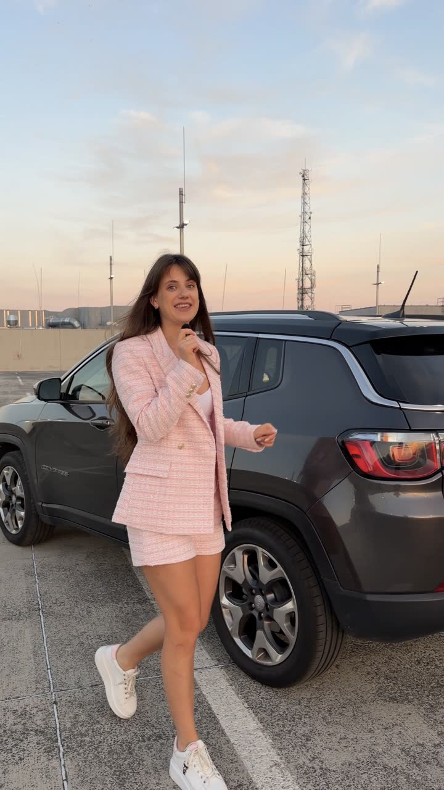
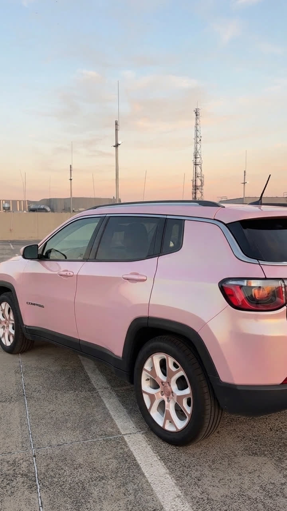
ДоПісля⇆
Потягни, щоб побачити різницю
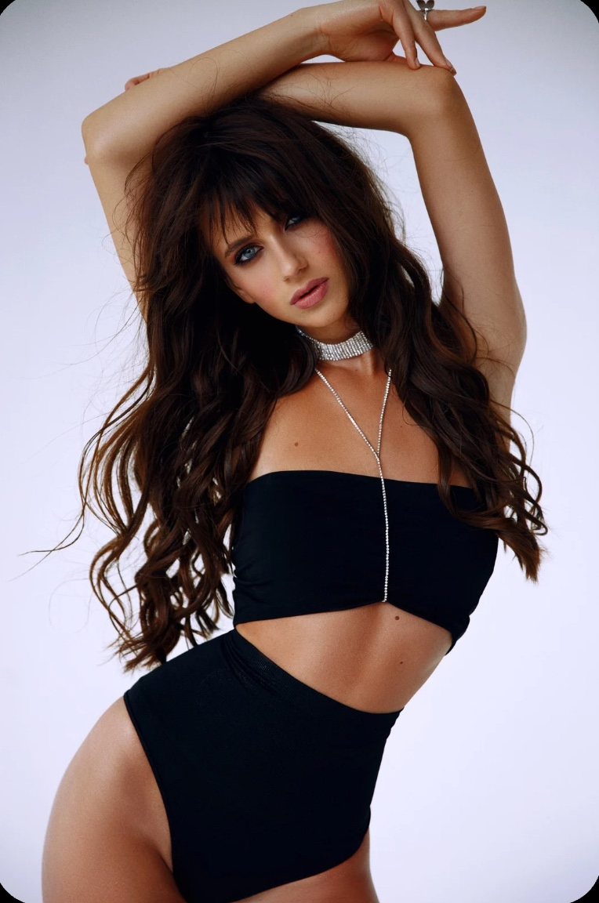
@diana.tsiolkovska
UGC & AI Creator · твій гайд від Діани
Крок за кроком
Як це працює
Машину модель бере з фото, а тебе — з відео. Тому спершу робимо фото-референси без тебе, а потім міняємо машину у відео.
01
Знімаєш свою машину
Що саме зняти, написано біля кожного кроку. Тебе в кадрі може бути скільки завгодно.
02
Робиш фото-референс у Nano Banana
Береш скрін зі свого відео, і промпт прибирає з нього тебе та змінює машину.
03
Оживляєш у відео
Ти в кадрі → Higgsfield Genjutsu, режим Objects swap: змінює машину, а тебе лишає як є.
Тебе в кадрі немає → Gemini Omni Flash 1.1, Create Video: References редагує твоє відео,
Frames оживлює рух між першим і останнім кадром. Він найдешевший для тестів.
04
Монтуєш у CapCut
Склеюєш кліпи, додаєш звук і суму тюнінгу на екрані.
Перед стартом
5 правил
На фото-референсах тебе немаєТоді модель для відео бере з них тільки машину і не перемальовує твоє обличчя.
Текст у [дужках] міняй на своєКолір, диски, косметику, одяг. Якщо нічого не міняти, вийде рожева машина, як у мене. Дужки можна не видаляти.
@Image 1 і @Video 1 встав зановоПісля вставки промпту видали @Image 1 чи @Video 1, набери @ і обери потрібний файл зі списку.
Спершу тест на 360p, фінал на 1080pТак не спалиш кредити на невдалу спробу.
Біля кожного кроку є сумаСкільки такий тюнінг коштував би насправді — можна показати у відео.
Промпти / EN
Шість кроків тюнінгу
У кожному кроці спершу фото в Nano Banana, потім відео з цими фото. Наступні кроки беруть фото з попередніх, тому йди по порядку.
01
Колір і диски
+104 000 грнразом 104 000 грн
Зніми: себе біля машини, щоб її було видно з різних боків. Окремо — колесо крупним планом.
1Фото: головний референс машиниNano Banana
1Скрін з відео, де машину видно збоку разом з колесами
Remove the person completely and naturally restore the car and the background behind them. Repaint the car body in a [glossy pearl pink wrap with a soft iridescent shimmer]. Replace the wheels with [glossy white rims with rose gold accents] and new black tires. Keep everything else exactly the same: the car's shape and badges, black lower trims, roof rails, chrome window trim, tinted windows, lights, sky, background, camera angle and lighting. Photorealistic, looks like the same photo.
можна замінити: колір кузова, диски
2Фото: інші ракурси машиниNano Banana
1Скрін з іншого ракурсу
2Головний референс з кроку 1
Use Image 1 as the base photo. Remove the person completely, including their reflection on the car body, and naturally restore the car and the background behind them. Repaint the car to match the car in Image 2 exactly: the same color, the same shimmer, the same rims. Keep everything else from Image 1 exactly the same: car shape, door handles, badges, black lower trims, chrome window trim, tinted windows, lights, license plate, sky, background, camera angle. Photorealistic.
3Фото: колесо крупним планомNano Banana
1Чіткий скрін з кліпу з колесом
2Головний референс з кроку 1
Use Image 1 as the base photo. Replace the rim with the exact rim design from Image 2: [glossy white rim with rose gold spokes], the same spoke shape and number, the same center cap. Keep the black tire, its size and sidewall. Make any visible car paint the same color as in Image 2; the black plastic wheel arch trim stays black. Keep the camera angle, framing, lighting, ground and background of Image 1 exactly the same. Sharp, photorealistic, natural reflections on the rim.
можна замінити: диски
4Відео: ти біля машиниGenjutsu
Higgsfield Genjutsu → Objects swap. Завантаж:
videoСвоє відео біля машини
@image1–3Усі фото машини з кроків 1–3
Replace the [dark grey] car with the car from @image1, @image2 and @image3: [glossy pearl pink wrap, white rims with rose gold spokes]. If the video has several shots, the car must look identical in all of them. Keep the woman exactly as in the video: her face, hair, outfit, shoes, gestures, lip movement and walk. Keep her natural reflection on the glossy paint and her shadow exactly as in the video. Keep the background, lighting, camera movement, timing and the cuts between the shots unchanged.
можна замінити: колір твоєї машини зараз, новий вигляд
5Відео: колесоGemini Omni
Gemini Omni Flash 1.1 → Create Video · References. Завантаж:
@Video 1Кліп з колесом
@Image 1Фото колеса крупним планом з кроку 3
=== WHEEL SWAP — V2V on @Video 1 (match source length) ===
SOURCE LOCK: This is NOT a new generation. Keep the exact camera move, framing, speed, timing, lighting, ground and background from @Video 1. One continuous shot, no cuts.
THE CHANGE: replace the rim with a [glossy white rim with rose gold spokes] exactly like the wheels in @Image 1, same size and position. Keep the black tire. Any painted car body visible in the frame becomes the same [glossy pearl pink wrap] as in @Image 1. The black plastic wheel arch trim stays black.
LOOK: photoreal, natural reflections of the sky on the rim and the paint, same white balance, grain and sharpness as the source.
FORBIDDEN: changing the camera move, rim size or tire shape; warping, melting or flickering spokes; cartoon or CG look; on-screen text. Audio: no music.
02
Бардачок з косметикою
+22 000 грнразом 126 000 грн
Зніми: як твоя рука відкриває бардачок, а камера повільно наближається.
1Фото: відкритий бардачокNano Banana
1Скрін, де бардачок відкритий і видно сидіння й полик
Keep this exact photo: same camera angle, framing, lighting, and the black dashboard, air vents and center console. Make only these changes:
1. Glove box: remove everything inside. Line it with [soft blush pink velvet] and fill it with neatly arranged [luxury makeup in a clear acrylic organizer: lipsticks, mascara, a compact powder, a blush palette, a small perfume bottle and makeup brushes]. Soft warm LED light glows inside. No readable brand names or logos.
2. Seat: the leather becomes [white leather] with the same shape, stitching and seams.
3. Floor mat: replace the rubber mat with a [fluffy white faux fur mat] of the same shape.
Photorealistic, natural light, real textures.
можна замінити: оббивку, косметику, сидіння, полик
2Фото: бардачок крупним планомNano Banana
1Скрін крупного плану бардачка
2Фото бардачка з кроку 1
Use Image 1 as the base photo. Replace everything inside the glove box with the exact same cosmetics, organizer, lining and warm LED light as in Image 2, arranged the same way. Make the floor mat at the bottom the same as in Image 2. Keep the glove box lid, dashboard, camera angle and framing of Image 1. Photorealistic, sharp.
3Відео: бардачок відкриваєтьсяGemini Omni
Gemini Omni Flash 1.1 → Create Video · References. Завантаж:
@Video 1Своє відео з бардачком
@Image 1–2Обидва фото бардачка з кроків 1–2
=== GLOVE BOX & INTERIOR SWAP — V2V on @Video 1 (match source length) ===
SOURCE LOCK: This is NOT a new generation. Keep the exact camera move, framing, speed and timing from @Video 1. Her hand opens the glove box exactly as in the source: same hand, manicure, sleeve and movement. Do NOT re-frame, re-time or stabilize. One continuous shot, no cuts.
THE CHANGE (match @Image 1 and @Image 2):
- Inside the glove box: the old items are gone. Instead, neatly arranged [luxury makeup in a clear acrylic organizer on soft blush pink velvet], lit by a warm LED light, exactly as in @Image 1 and @Image 2. The cosmetics are already inside before the lid opens and stay perfectly still.
- The seat becomes [white leather], same shape and stitching.
- The floor mat becomes a [fluffy white faux fur mat], same shape.
Everything else stays as in the source: the dashboard, air vents, screen, center console, door and the view through the windshield.
LOOK: photoreal, same light, white balance, grain and sharpness as the source.
FORBIDDEN: cosmetics appearing, moving or morphing during the shot; any change to her hand or the camera move; readable brand names or logos; cartoon or CG look; on-screen text. Audio: room tone and the glove box opening click only, no music.
03
Туш у перемикачі дворників
+7 000 грнразом 133 000 грн
Зніми: пальці тримають кінчик перемикача дворників, потім у руці справжня туш поруч із ним. Знадобляться два скріни: початок і кінець руху.
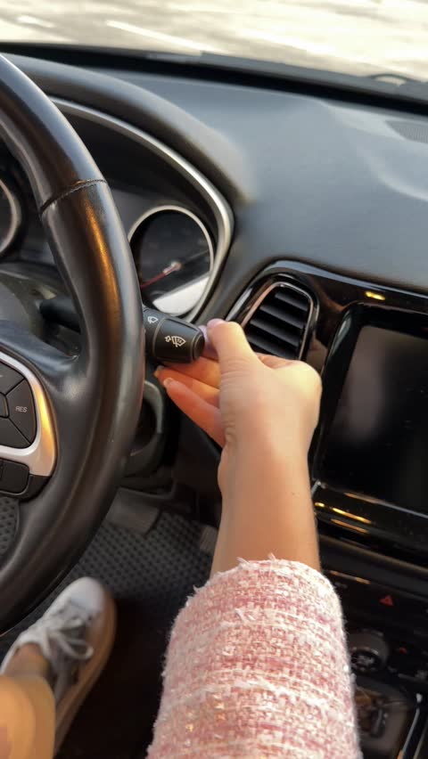
До
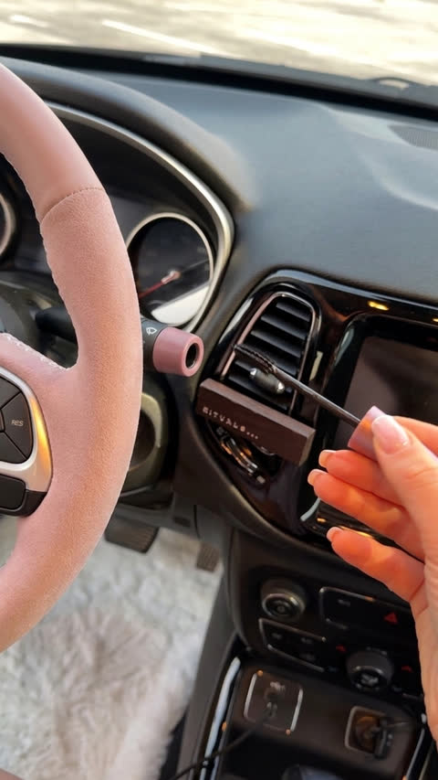
Після
1Фото: останній кадр — туш у руціNano Banana
1Скрін, де туш уже в руці біля перемикача
Use this photo as the base: keep the camera angle, framing, her hand, manicure, the mascara in her hand and the direction of the light. Make it a clean, aesthetic interior photo:
1. Clean everything: the dashboard, air vents, screen, buttons and steering wheel are spotless and freshly detailed, with no dust, smudges, fingerprints, scratches or dirt.
2. The wiper stalk: its tip is gone because the mascara was pulled out of it. The stalk ends in a neat round opening with a [mauve pink] rim matching the mascara cap, as if the stalk is the mascara tube.
3. The floor mat becomes a clean, [fluffy white faux fur mat] of the same shape.
4. The steering wheel rim is a brand-new premium retrim: clean [pastel blush pink alcantara] on the sides and smooth [blush pink nappa leather] on the top and bottom, uniform color, white double stitching, tight factory fit with the original shape and thickness.
Look: soft, clean, slightly brighter and airy, gentle warm light with soft highlights, no harsh glare, no noise. The colors stay clean, not brownish. Photorealistic, like a photo from a luxury car interior catalog.
можна замінити: колір тюбика, полик, кермо
2Фото: перший кадр — кришечка в перемикачіNano Banana
1Скрін, де пальці тримають кінчик перемикача
2Останній кадр з кроку 1
Use Image 1 as the base photo. Make these changes:
1. The end of the wiper stalk is the tube from Image 2, and a [mauve] mascara cap sits flush inside it, so the stalk tip looks like one neat two-part piece. Her fingers grip the cap.
2. The black rubber floor mat becomes the same clean, fluffy mat as in Image 2, including under and around her shoes.
3. Copy the steering wheel rim exactly from Image 2: the same color, the same soft matte texture over the whole rim, the same seams and the same thin white stitching along the inner edge. Brand-new and clean, uniform color, tight factory fit, the same shape and thickness as the original rim. The spokes and buttons stay as they are.
4. The dashboard, vents, screen and buttons are spotless, with no dust or smudges.
Keep her hand, sleeve, legs, shoes, camera angle and light exactly as in Image 1. Photorealistic, clean aesthetic look.
можна замінити: колір кришечки
3Відео: туш виходить з перемикачаGemini Omni
Gemini Omni Flash 1.1 → Create Video · Frames · 4–5 с. Завантаж:
firstПерший кадр: кришечка в перемикачі
lastОстанній кадр: туш у руці
Single continuous shot, no cuts. The camera slowly pushes in slightly to end exactly on the last frame.
THE MECHANICS: the [pink] end of the wiper stalk is a real mascara tube. In the first frame the whole mascara wand is hidden inside the stalk, and only the [mauve] cap is visible, sitting flush in the round opening.
TIMING:
- 0–1s: her fingers hold the [mauve] cap and give it a small quarter twist, like opening a real mascara.
- 1–2.5s: she slowly pulls the cap straight out along the axis of the stalk. The thin black wand slides out of the exact center of the round opening, staying perfectly centered and in line with the tube the whole time, until the bristles with black mascara fully come out. The opening stays round and empty.
- 2.5–4.5s: she smoothly moves the mascara into the position of the last frame.
The stalk and the tube never move, bend or change shape. Natural, relaxed hand with five fingers and the same manicure and sleeve. Her legs and shoes stay in place on the mat the whole time. The steering wheel, mat and clean interior stay exactly as in the first and last frames.
LOOK: photoreal, clean and aesthetic, soft warm light, no flicker.
FORBIDDEN: the wand coming from beside, above or below the stalk; the wand passing through her fingers; the cap staying on the stalk after the pull; a second wand or cap; the tube moving or bending; morphing fingers; objects appearing or disappearing; cartoon or CG look; on-screen text. Audio: the soft pop of a mascara being opened, no music.
Перед відео звір два кадриКермо, полик, ноги й фон мають бути однакові. Відрізняються тільки рука й туш — інакше в кадрі щось з'явиться або зникне.
04
Помада в перемикачі світла
+7 000 грнразом 140 000 грн
Зніми: пальці на кінчику перемикача світла, потім ти показуєш справжню помаду в камеру.
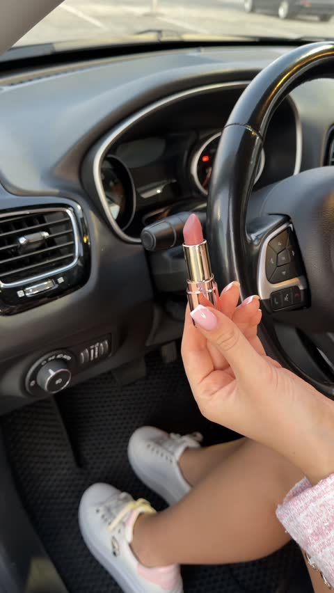
До
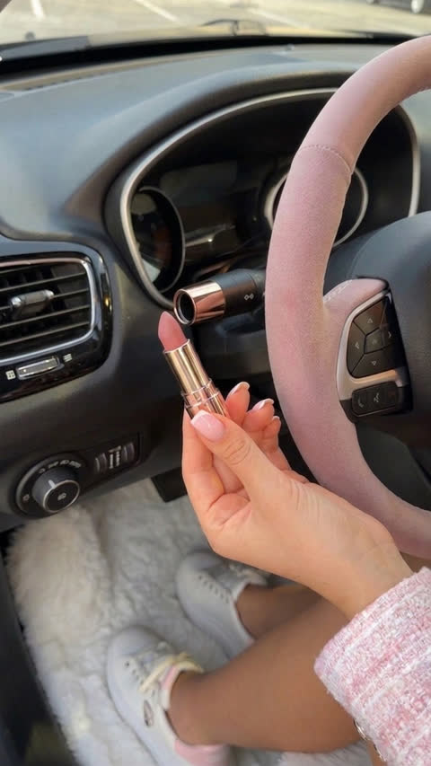
Після
1Фото: перший кадр — помада в перемикачіNano Banana
1Скрін, де пальці тримають кінчик перемикача
2Останній кадр туші з кроку 03
Use Image 1 as the base photo. Make these changes:
1. The end of the turn-signal stalk becomes a [rose gold] lipstick cap: a short shiny tube fixed to the stalk, with the base of a lipstick inserted flush into it, so the stalk tip looks like one neat two-part piece, like a luxury lipstick case. Her fingers hold the lipstick base. The black part of the stalk with the icons stays.
2. Copy the steering wheel rim from Image 2: the same color, the same matte texture, the same white stitching. Brand-new and clean, tight factory fit with the original shape and thickness. The spokes and buttons stay.
3. The black rubber floor mats become the same clean, fluffy mats as in Image 2, including under and around her shoes.
4. The dashboard, vents, knobs and buttons are spotless, with no dust or smudges.
Keep her hand, rings, manicure, sleeve, legs, shoes, camera angle and light exactly as in Image 1. Photorealistic, clean aesthetic look.
можна замінити: колір ковпачка
2Фото: останній кадр — помада в камеруNano Banana
1Скрін, де ти показуєш помаду
2Перший кадр з кроку 1
Use Image 1 as the base photo. Make these changes:
1. The end of the stalk behind the lipstick becomes the same short tube as in Image 2, now empty, with a clean round opening at the end, because the lipstick was pulled out of it. The black part of the stalk stays.
2. The lipstick in her hand stays exactly as it is.
3. The steering wheel, the fluffy floor mats and the clean dashboard look exactly as in Image 2.
Keep her hand, manicure, legs, shoes, sleeve, camera angle and light exactly as in Image 1. Sharp, no motion blur. Photorealistic, clean aesthetic look.
3Відео: дістаю помаду й показуюGemini Omni
Gemini Omni Flash 1.1 → Create Video · Frames · 5 с. Завантаж:
firstПерший кадр: помада в перемикачі
lastОстанній кадр: помада в камеру
Single continuous shot, no cuts. The camera is almost static, with a slight natural handheld movement, ending exactly on the last frame.
THE MECHANICS: the [rose gold] end of the stalk is a real lipstick cap. In the first frame the whole lipstick is hidden inside the stalk, and only its [rose gold] base is visible, sitting flush in the round opening. The lipstick is NOT in her hand before the pull.
TIMING:
- 0–0.8s: her fingers hold the lipstick base and give it a small quarter twist, like opening a real lipstick.
- 0.8–2.8s: she slowly pulls the base straight out along the axis of the stalk. The lipstick case slides out of the exact center of the round opening, staying perfectly centered and in line with the stalk the whole time, until the [nude] lipstick bullet fully comes out. The opening stays round and empty.
- 2.8–5s: in one smooth continuous motion she turns the lipstick upright and raises it to show it to the camera, ending exactly in the position of the last frame, and holds it still.
The stalk and the cap never move, bend or change shape. Natural, relaxed hand with five fingers, the same manicure, rings and sleeve. Her legs and shoes stay in place on the mats the whole time. The mats and clean interior stay exactly as in the first and last frames.
The steering wheel rim stays the same [dusty rose pink alcantara] with white stitching in every frame. It never turns black, never changes color or texture.
LOOK: photoreal, clean and aesthetic, soft warm light, no flicker.
FORBIDDEN: skipping the pull; the lipstick appearing in her hand without visibly coming out of the stalk; the lipstick coming from beside, above or below the stalk; the lipstick passing through her fingers; the base staying on the stalk after the pull; a second lipstick or cap; the cap moving or bending; the steering wheel changing color; morphing fingers; objects appearing or disappearing; cartoon or CG look; on-screen text. Audio: a soft click as the lipstick comes out, no music.
Помада «телепортується» в руку?Зроби два кліпи. Перший закінчується кадром, де помада щойно вийшла й ще біля перемикача, другий починається з нього і показує помаду в камеру. У CapCut склейка буде непомітна.
05
Біла шкіра, кермо і полики
+55 500 грнразом 195 500 грн
Зніми: себе за кермом з відчиненими дверима, камера йде збоку до переду. Зі скрінів цього відео зробиш фото салону без себе.
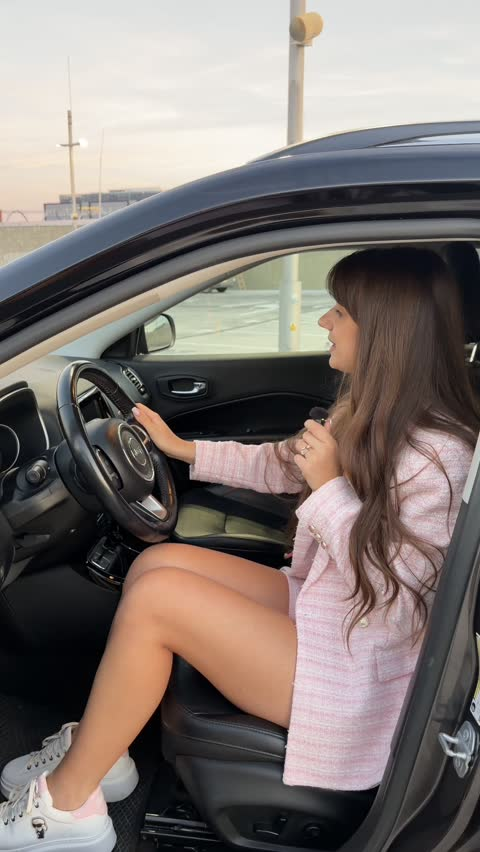
До
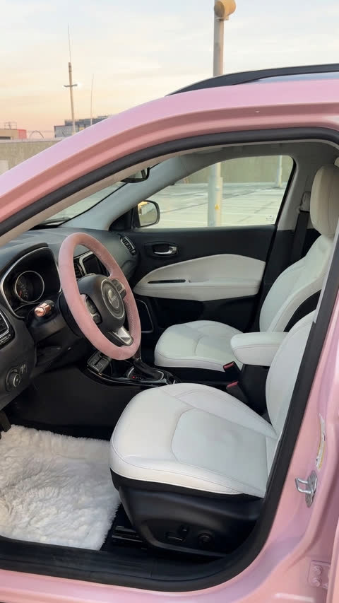
Після
1Фото: салон збоку, без тебеNano Banana
1Скрін збоку
2Машина ззовні з кроку 01
3Кадр з тушшю з кроку 03
4Кадр з помадою з кроку 04
Use Image 1 as the base photo. Remove the person completely and show the empty driver's seat and interior behind them, naturally restored. Then make these changes:
1. Exterior: all visible painted body parts (door frame, roof edge, the painted edge of the open door) are the same color as the car in Image 2. Black window trims and rubber seals stay black.
2. Seats: [white leather] with the same shape, seams and stitching as the original seats.
3. Door panels: the leather inserts become [white leather]; black plastic trims and handles stay.
4. Steering wheel rim: copy it exactly from Image 3, clean, tight factory fit. The spokes, logo and buttons stay.
5. Floor mat: the same clean, fluffy mat as in Image 3.
6. Stalk tips: the left stalk tip looks like in Image 4; the right stalk tip looks like in Image 3.
The dashboard and center console stay black and spotless. Keep the camera angle, framing, background and light exactly as in Image 1. Photorealistic, clean aesthetic look.
можна замінити: сидіння, двері
2Фото: салон спереду, без тебеNano Banana
1Скрін спереду
2Салон збоку з кроку 1
3Кадр з тушшю з кроку 03
Use Image 1 as the base photo. Remove the person completely and show the empty driver's seat, dashboard and door behind them, naturally restored. Make the car look exactly like in Image 2: the same paint on the door frame and the open door, the same seats, door panel inserts, floor mat and stalk tips. Copy the steering wheel rim exactly from Image 3. The dashboard, center console and gear lever stay black and spotless. Keep the camera angle, framing, background and light exactly as in Image 1. Photorealistic, clean aesthetic look.
3Фото: крісла повністюNano Banana
1Салон збоку з кроку 1
2Салон спереду з кроку 2
Create a new photo of the same car interior as in Image 1 and Image 2, as if the camera has moved into the open driver's door opening and turned toward the seats. Wide-angle view at chest height looking diagonally across the cabin: the full driver's seat and passenger seat are clearly visible from the headrests down to the cushions, with the same leather, stitching, side bolsters and seat bases; behind them the rear seats are partly visible. Everything looks exactly like in Image 1 and Image 2: the same leather and stitching, the door panel inserts, the floor mat, the painted door frame at the edge of the frame, the same light. Vertical 9:16, photorealistic, clean aesthetic look.
4Відео: ти сидиш у машиніGenjutsu
Higgsfield Genjutsu → Objects swap. Завантаж:
videoСвоє відео за кермом
@image1Салон збоку з кроку 1
@image2Салон спереду з кроку 2
Restyle the car in the video to match @image1 and @image2 (the same car seen from the side and from the front): [glossy pearl pink] paint on the door frame, roof edge and open door; [white leather] seats with black seat bases and [white leather] door panel inserts; the steering wheel rim in [clean dusty pink alcantara with white stitching]; a [fluffy white faux fur] floor mat; [a rose gold left stalk tip and a dusty pink right stalk tip]. The dashboard and center console stay black. The steering wheel, the seats and the floor mat keep their new look in every frame.
Keep the woman exactly as in the video: her face, eyes, expression, hair, makeup, her outfit with its own colors, jewelry, anything she holds, her hand on the wheel, gestures, lip movement, the way she turns to the camera, legs and shoes. Keep the parking lot, sky, lighting, camera movement and timing unchanged.
5Відео: камера заходить у салонGemini Omni
Gemini Omni Flash 1.1 → Create Video · Frames · 5–6 с. Завантаж:
firstПерший кадр: салон збоку
lastОстанній кадр: крісла повністю
Single continuous shot, no cuts. A smooth handheld gimbal shot at eye level: the camera slowly moves toward the open driver's door, gently enters the door opening, then smoothly turns toward the seats, revealing the full seats from the headrests down to the cushions, and ends exactly on the last frame. Real camera movement with natural parallax, not a zoom: the door frame in the foreground moves past faster than the seats and the cabin behind. Slow, steady speed with a soft ease-in and ease-out, and a very subtle natural handheld sway.
The car is parked and completely still. The doors do not move. No people.
DETAILS STAY CONSISTENT in every frame: [glossy pearl pink] paint, [white leather] seats with the same stitching and black seat bases, [white leather] door panel inserts, the [dusty rose pink alcantara] steering wheel with white stitching, the [fluffy white] floor mat, the stalk tips, the black dashboard and center console. Nothing changes shape, color or texture. The steering wheel never turns black.
LIGHT: soft warm light. As the camera moves, soft natural reflections slide gently across the paint and the leather. Natural shallow depth of field, real camera motion blur, no flicker.
FORBIDDEN: zoom instead of camera movement; fast or shaky motion; seats or steering wheel morphing or changing color; objects appearing or disappearing; people; cartoon, CG or plastic look; on-screen text. Audio: quiet outdoor ambience only, no music.
06
Гардероб у багажнику
+32 000 грнразом 227 500 грн
Зніми: себе біля відчиненого багажника — загальний план і ближче.
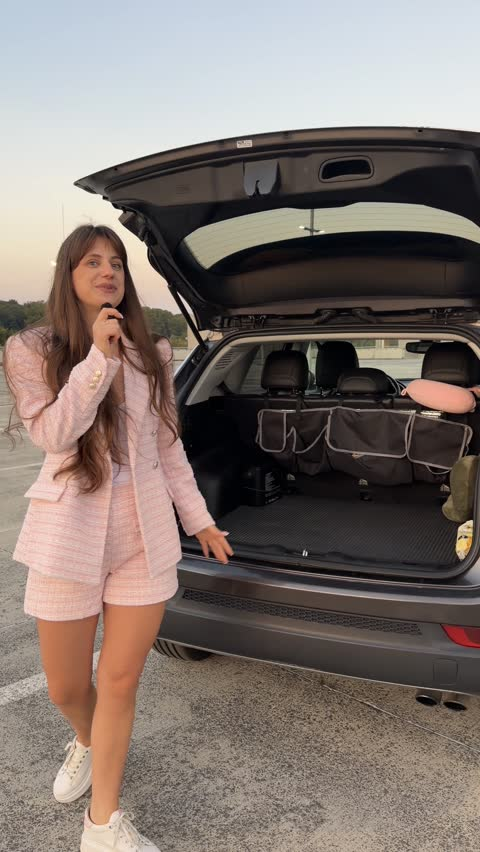
До
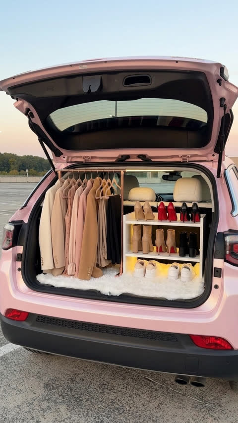
Після
1Фото: гардероб, ближній кадрNano Banana
1Скрін відчиненого багажника
2Машина ззаду з кроку 01
3Салон з новими сидіннями з кроку 05
Use Image 1 as the base photo. Remove the person completely and naturally restore the car and the background behind them. Then turn the trunk into a stylish mini wardrobe:
1. Clear the trunk: remove all bags, organizers, boxes and other items.
2. Left side: a slim [rose gold] clothing rail running from the trunk opening toward the rear seats, with clothes hanging in a neat row on matching velvet hangers, seen from the side: [two blazers, three dresses, two coats, blouses and trousers], in a coordinated palette of [cream, beige, blush pink, camel and black]. Everything fits neatly inside the trunk height.
3. Right side: a [white lacquered] shoe shelf with two or three tiers, shoes displayed neatly in pairs with the toes facing out: [three pairs of pumps in beige, red and black, a pair of tall boots, a pair of black ankle boots and a pair of white sneakers].
4. Floor: a clean, [fluffy white faux fur mat].
5. Lighting: a soft warm LED strip along the top of the trunk opening and under the shelf tiers, glowing gently.
6. The rear seats visible behind look like the seats in Image 3.
7. The car's painted body is the same color as in Image 2. Black plastic trims, the black lower bumper, the taillights and the glass stay as they are.
Keep the camera angle, framing, sky, background and light exactly as in Image 1. Photorealistic, clean, stylish boutique look.
можна замінити: штангу, одяг, кольори, полицю, взуття, полик
2Фото: гардероб, загальний планNano Banana
1Дальній скрін біля багажника
2Ближній кадр з кроку 1
Edit Image 1. The result must keep the exact composition of Image 1: the same camera position, angle, distance and framing, with the car exactly where it is in Image 1. Do not move the camera, do not center the car, do not crop or zoom. Image 2 is only a reference for how the car and the trunk should look.
1. Remove the person completely and naturally restore the background behind them.
2. Repaint the car the same color as in Image 2. Black plastic trims, the black lower bumper, the taillights and the glass stay as they are.
3. Fill the trunk with the same wardrobe as in Image 2, seen from this angle: the same rail with the same clothes on the left, the same shoe shelf with the same shoes on the right, the same mat, the warm LED light and the same rear seats. Remove all bags and boxes.
Photorealistic, the same light as in Image 1.
Загальний план вийшов копією ближнього?Зроби у два кроки: спершу тільки прибери себе з кадру, потім відкрий фото в Inpaint, обведи лише машину й встав пункти 2 і 3 з промпту.
3Відео: ти біля багажникаGenjutsu
Higgsfield Genjutsu → Objects swap. Завантаж:
videoСвоє відео біля багажника
@image1Ближній кадр з кроку 1
@image2Загальний план з кроку 2
Restyle the car and its open trunk in the video to match @image1 and @image2 (the same car seen up close and from further away): [glossy pearl pink] paint; inside the trunk a mini wardrobe with a [rose gold] rail on the left holding the same clothes in the same order, a [white] shoe shelf on the right with the same shoes, a [fluffy white faux fur] mat and a soft warm LED light; [white leather] rear seats. The bags, boxes and all other items are gone. Black plastic trims, the black lower bumper, the taillights and the glass stay as they are. The wardrobe stays exactly the same and perfectly still in every frame.
Keep the woman exactly as in the video: her face, eyes, expression, hair, makeup, her outfit with its own colors, jewelry, anything she holds, gestures, her hand pointing at the trunk, lip movement, walk, legs and shoes. Keep the parking lot, sky, lighting, camera movement and timing unchanged.